Plus de donneurs décédés et de patients transplantés.
Les temps d’attente jusqu’à la transplantation ne sont plus indiqués par trimestre, mais seulement une fois par an. Le calcul est effectué selon une nouvelle méthodologie (“Combien de temps faut-il attendre pour recevoir un organe ?”).
1. Liste d’attente
Vous trouverez ici les chiffres clés sur la liste d’attente des personnes en attente d’un organe en Suisse. Les personnes listées pour un don de donneur vivant ne sont pas prises en compte dans cette section.
Fin septembre 2024, 1269 personnes attendaient en Suisse un ou plusieurs organes de donneurs décédés. Par rapport à la fin du juin 2024, cela représente 41 personnes de moins (-3 %). 16 personnes sont décédées sur la liste d’attente au troisième trimestre 2024, soit le même nombre qu’au deuxième trimestre.
1.1 Personnes en liste d’attente
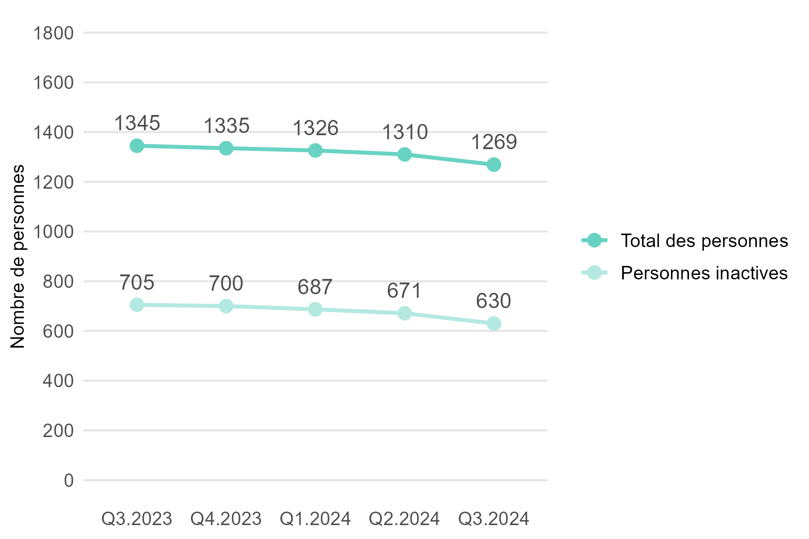
| Indicateur | Dernier trimestre | Changement par rapport au trimestre précédent |
|---|---|---|
| Nombre de patients en liste d’attente | 1269 | -41 patients (-3 %) |
| Part dans état inactif | 50 % | -1 point de pourcentage |
A la fin du dernier trimestre, 1269 personnes attendaient en Suisse un ou plusieurs organes de donneurs décédés. Par rapport au trimestre précédent, cela représente 41 personnes de moins (-3 %). La moitié (50 %) des personnes sur la liste d’attente était classé en inactif.
1.2 Personnes en liste d’attente par organe
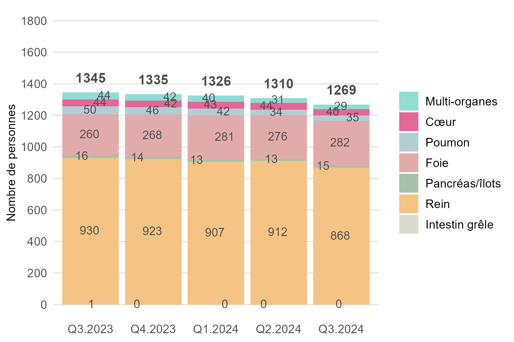
| Indicateur | Dernier trimestre | Changement par rapport au trimestre précédent |
|---|---|---|
| Nombre de patients en liste d’attente | 1269 | -41 (-3 %) |
| Multi-organes | 29 | -2 (-6 %) |
| Cœur | 40 | -4 (-9 %) |
| Poumons | 35 | +1 (+3 %) |
| Foie | 282 | +6 (+2 %) |
| Rein | 868 | -44 (-5 %) |
| Pancréas/îlots de Langerhans | 15 | +2 (+13 %) |
| Intestin grêle | 0 | +/- 0 |
Sur les 1269 patients en liste d’attente, la grande majorité attendait un rein (868; 68 %) ou un foie (282; 22 %). 29 patients attendaient plus d’un organe.
1.3 Événements sur la liste d’attente
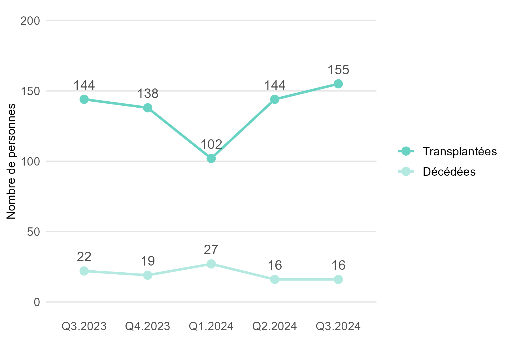
| Indicateur | Dernier trimestre | Changement par rapport au trimestre précédent |
|---|---|---|
| Nombre de patients transplantés | 155 | +11 (+8 %) |
| Nombre de patients décédés | 16 | +/- 0 |
Au cours du dernier trimestre, 155 patients en Suisse ont reçu un ou plusieurs organes provenant d’un don d’organe après le décès. 16 patients sont décédés sur la liste d’attente, soit le même nombre qu’au trimestre précédent.
2. Don d’organes
Vous trouverez ici les chiffres clés sur le don d’organes après le décès et le don d’organes de donneurs vivants en Suisse.
Au troisième trimestre 2024, 55 personnes ont fait don de leurs organes après leur décès en Suisse. Ce sont 7 personnes de plus (+18 %) comparé au trimestre précédent. Parmi ces 55 personnes décédées, 29 (53 %) étaient en état de mort cérébrale après un arrêt cardio-circulatoire. 160 organes de donneurs décédés ont été transplantés en Suisse, soit 8 de plus (+5 %) qu’au trimestre précédent. Avec 2.9 organes, le nombre moyen d’organes transplantés par donneur décédé a légèrement diminué.
2.1 Personnes approuvées à faire un don d’organes après le décès
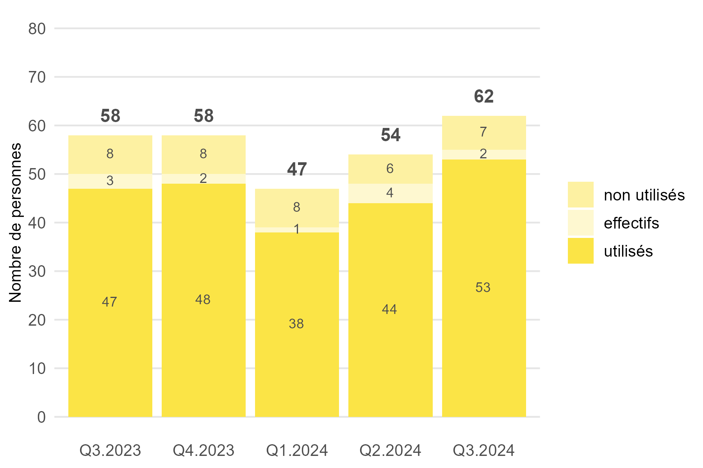
| Indicateur | Dernier trimestre | Changement par rapport au trimestre précédent |
|---|---|---|
| Nombre de personnes approuvées | 62 | +8 Personen (+15 %) |
| Proportion de personnes non utilisées | 11 % | +/- 0 points de pourcentage |
| Proportion de personnes effectives | 3 % | -4 points de pourcentage |
| Proportion de personnes utilisées | 85 % | +3 points de pourcentage |
Au dernier trimestre, Swisstransplant a approuvé 62 personnes en Suisse pour un don d’organe après le décès. Ce sont 8 de plus qu’au trimestre précédent. Le taux d’utilisation était de 85 %.
2.2 Donneurs décédés
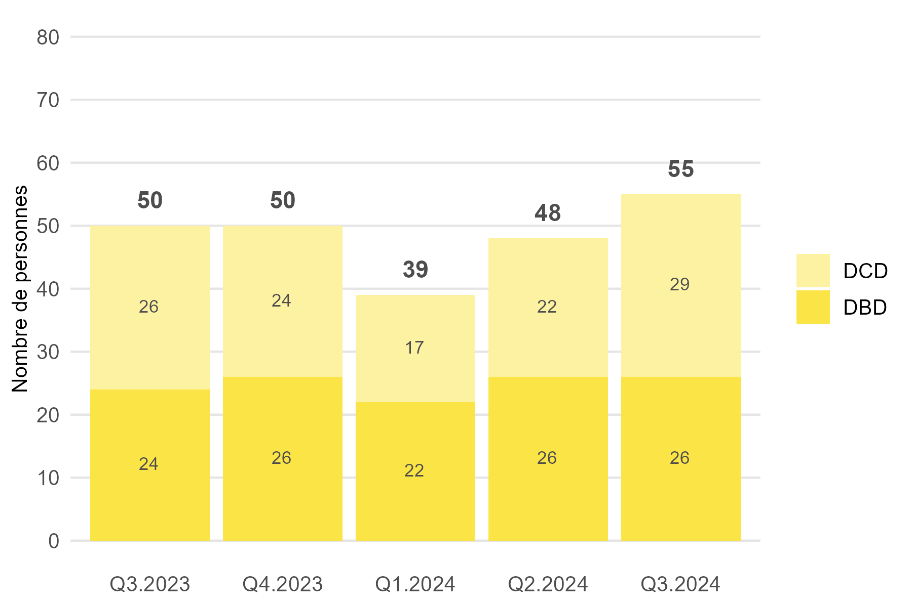
| Indicateur | Dernier trimestre | Changement par rapport au trimestre précédent |
|---|---|---|
| Nombre de donneurs (tous) | 55 | +7 (+15 %) |
| DCD | 29 (53 %) | +7 (+32 %) |
| DBD | 26 (47 %) | +/- 0 |
Au dernier trimestre, 55 personnes ont fait don de leurs organes après leur décès en Suisse. Par rapport au trimestre précédent, cela représente 7 personnes de plus (+15 %). L’augmentation est due au don en état de mort cérébrale après un arrêt cardio-circulatoire (DCD). Parmi ces 55 personnes décédées, 29 (53 %) étaient DCD.
2.3 Organes transplantés de donneurs décédés
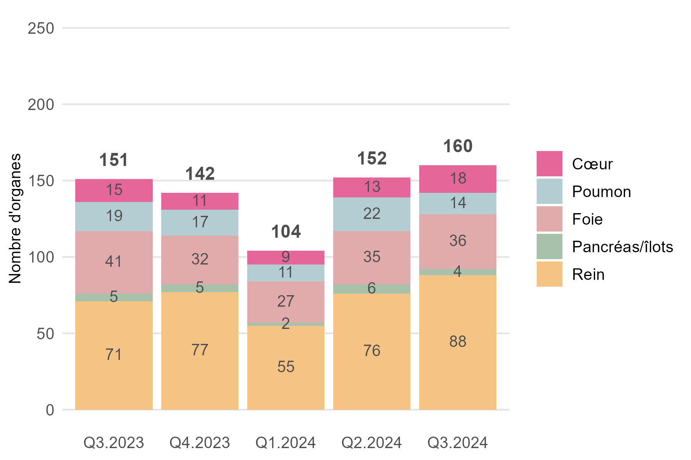
| Indicateur | Dernier trimestre | Changement par rapport au trimestre précédent |
|---|---|---|
| Nombre d’organes transplantés (tous) | 160 | +8 (+5 %) |
| Cœur | 18 | +5 |
| Poumons | 14 | -8 |
| Foie | 36 | +1 |
| Reins | 88 | +12 |
| Pancréas/îlots de Langerhans | 4 | -2 |
Au dernier trimestre, 160 organes ont été transplantés en Suisse de donneurs décédés. Par rapport au trimestre précédent, cela représente 8 organes de plus (+5 %).
2.4 Organes transplantés par donneur décédé
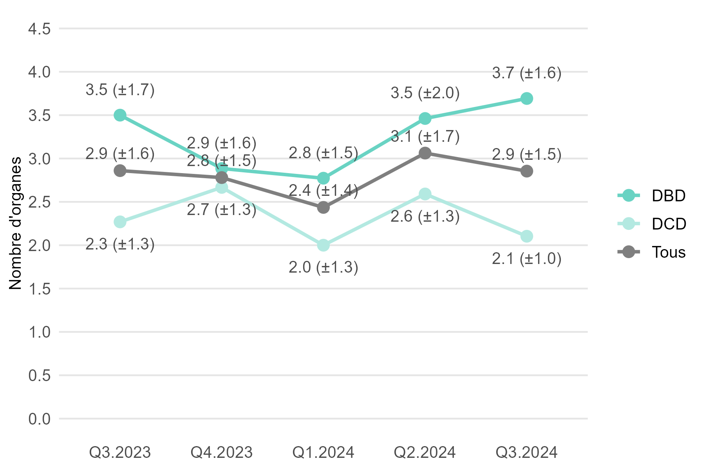
| Indicateur | Dernier trimestre | Changement par rapport au trimestre précédent |
|---|---|---|
| Organes par donneur (tous) | 2.9 | -0.2 |
| DBD | 3.7 | +0.2 |
| DCD | 2.1 | -0.5 |
Au dernier trimestre, 2.9 organes ont été transplantés en moyenne en Suisse par donneur décédé. Par rapport au trimestre précédent, cela représente 0.2 organe de moins.
2.5 Donneurs vivants
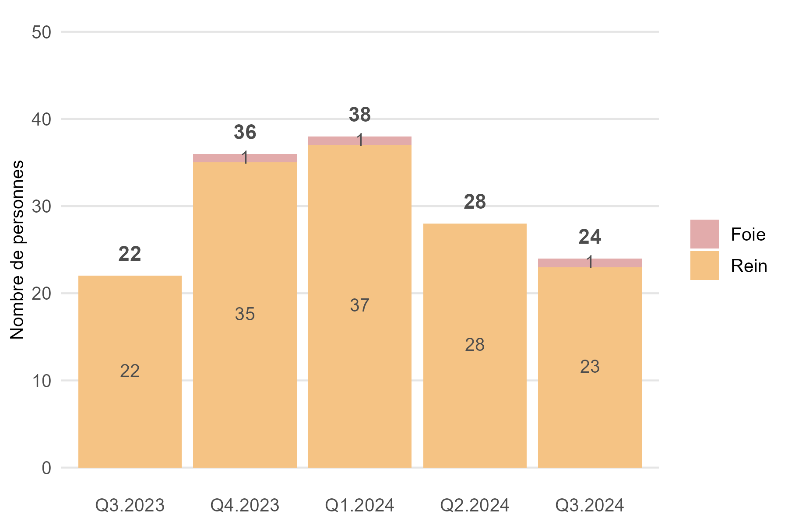
| Indicateur | Dernier trimestre | Changement par rapport au trimestre précédent |
|---|---|---|
| Nombre de donneurs vivants (tous) | 24 | -4 (-14 %) |
| Foie | 1 (4 %) | +1 |
| Rein | 23 (96 %) | -5 |
Au cours du dernier trimestre, 24 personnes vivantes en Suisse ont fait don d’un de leurs reins ou d’une partie de leur foie. Cela représente 4 don d’organes par des personnes vivantes de moins (-14 %) qu’au trimestre précédent.
3. Transplantations
Vous trouverez ici les chiffres clés sur les patients qui ont reçu un organe d’un donneur décédé. Il s’agit d’une part de patients Suisse qui ont reçu un organe d’un donneur décédé en Suisse ou à l’étranger. D’autre part, il s’agit de personnes à l’étranger qui ont reçu un organe d’une personne décédée en Suisse, lorsqu’aucune personne compatible n’a pu être trouvée en Suisse. Vous trouverez les chiffres clés concernant le don de rein et de foie par des donneurs vivants au point 2.5.
Au troisième trimestre 2024, 155 personnes ont reçu en Suisse un ou plusieurs organes de donneurs décédées. Par rapport au trimestre précédent, cela représente 11 transplantations de plus (+8 %). Parmi les 155 patients, 14 ont reçu un organe provenant de l’étranger.
3.1 Patients transplantés en Suisse
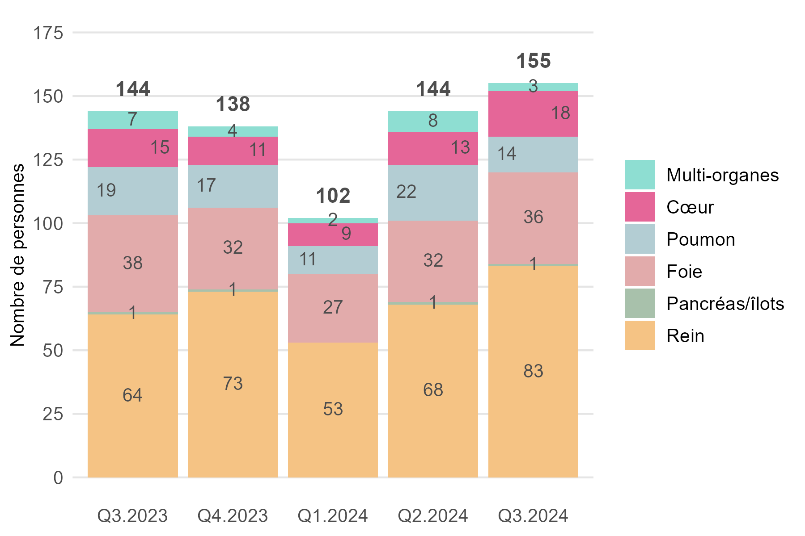
| Indicateur | Dernier trimestre | Changement par rapport au trimestre précédent |
|---|---|---|
| Nombre de patients transplantés (tous) | 155 | +11 (+8 %) |
| Multi-organes | 3 | -5 |
| Cœur | 18 | +5 |
| Poumons | 14 | -8 |
| Foie | 36 | +4 |
| Reins | 83 | +16 |
| Pancréas/îlots de Langerhans | 1 | -1 |
Au dernier trimestre, 155 personnes ont reçu en Suisse un ou plusieurs organes de donneurs décédés. Par rapport au trimestre précédent, cela représente 11 transplantations de plus (+8 %). 3 personnes ont reçu un foie et un pancréas (transplantation multi-organes).
3.2 Patients transplantés en Suisse avec des organes de l’étranger
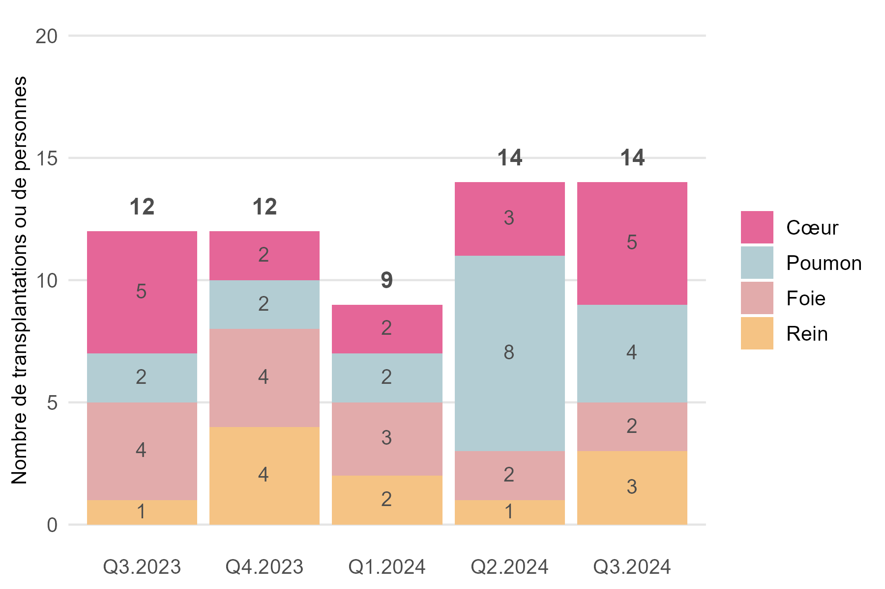
| Indicateur | Dernier trimestre | Changement par rapport au trimestre précédent |
|---|---|---|
| Nombre de patients transplantés avec des organes provenant de l’étranger | 14 | +/-0 |
Au dernier trimestre, 14 patients ont reçu en Suisse des organes provenant de donneurs décédés à l’étranger. C’est le même nombre qu’au trimestre précédent.
3.3 Organes transplantés à l’étranger
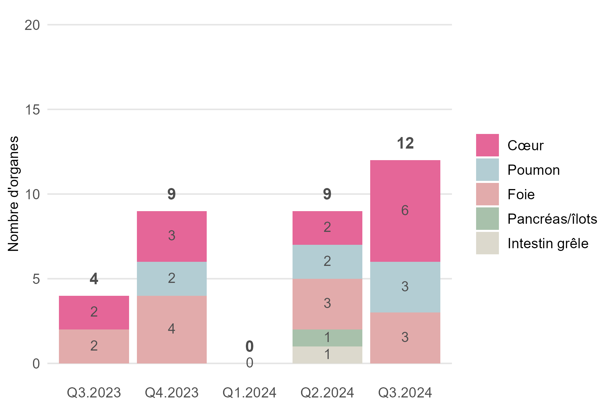
| Indicateur | Dernier trimestre | Changement par rapport au trimestre précédent |
|---|---|---|
| Nombre d’organes transplantés à l’étranger | 12 | +3 (+33 %) |
Au dernier trimestre, 12 organes provenant de donneurs décédés en Suisse ont été transplantés à l’étranger. Par rapport au trimestre précédent, cela représente 3 organes de plus (+33 %).
3.4 Transplantations du cœur
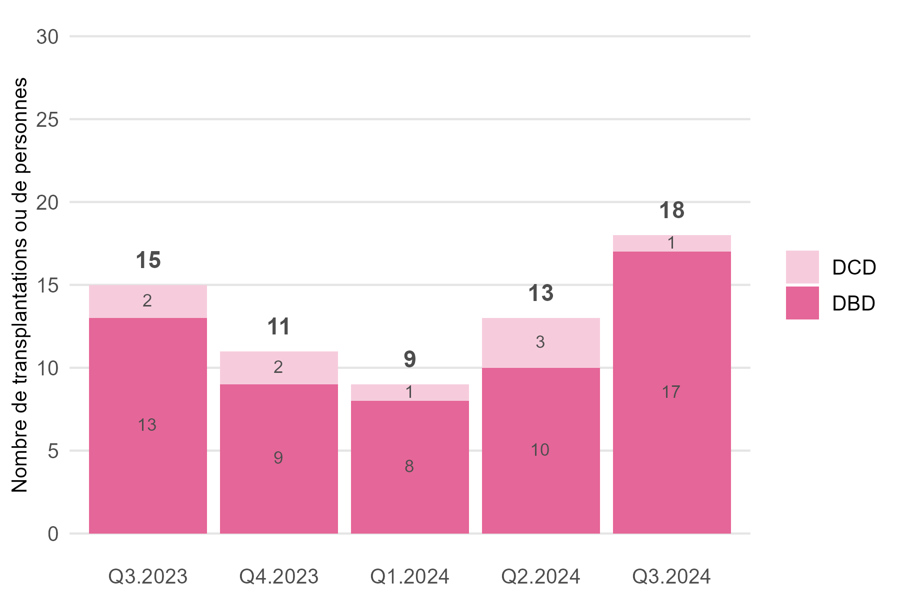
| Indicateur | Dernier trimestre | Changement par rapport au trimestre précédent |
|---|---|---|
| Nombre de transplantations du coeur | 18 | +5 (+38 %) |
| DCD | 1 (6 %) | -2 |
| DBD | 17 (94 %) | +7 |
Au dernier trimestre, 18 personnes ont reçu une transplantation cardiaque en Suisse. Par rapport au trimestre précédent, cela représente 5 transplantations cardiaques de plus (+38 %).
3.5 Transplantations de poumons
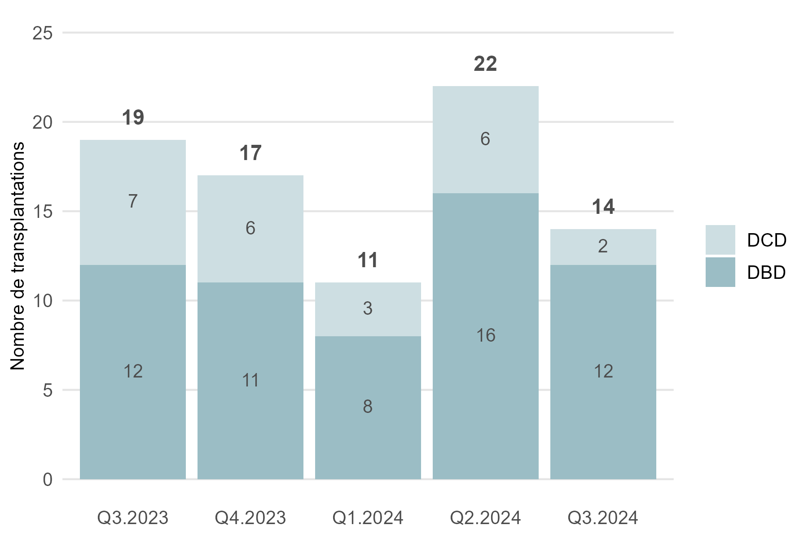
| Indicateur | Dernier trimestre | Changement par rapport au trimestre précédent |
|---|---|---|
| Nombre de transplantations de poumons | 14 | -8 (-36 %) |
| DCD | 2 (27 %) | -4 |
| DBD | 12 (73 %) | -4 |
Au dernier trimestre, 14 personnes ont reçu une transplantation pulmonaires en Suisse. Par rapport au trimestre précédent, cela représente 8 transplantations pulmonaires de moins (-36 %).
3.6 Transplantations du foie
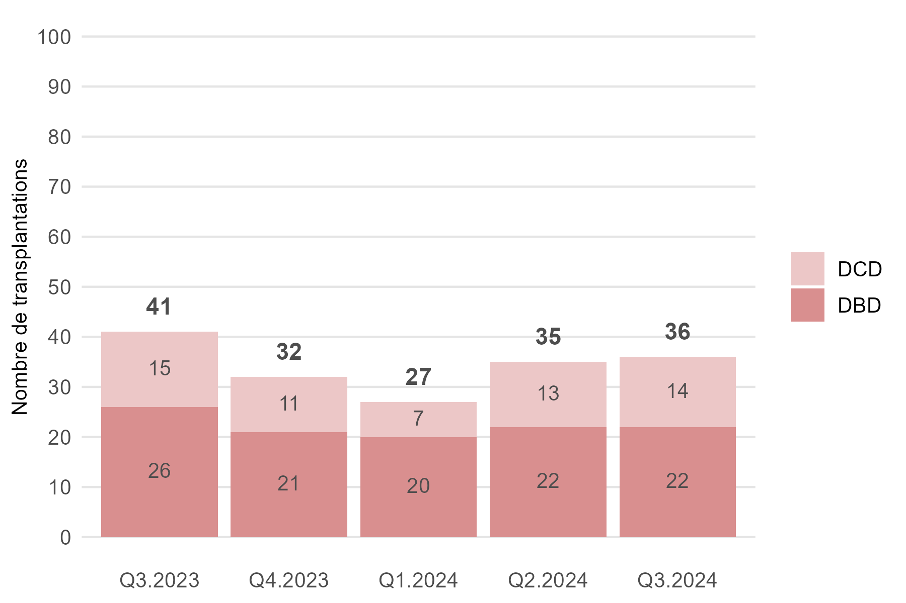
| Indicateur | Dernier trimestre | Changement par rapport au trimestre précédent |
|---|---|---|
| Nombre de transplantations du foie (tous) | 36 | +1 (+3 %) |
| DCD | 14 (37 %) | +1 |
| DBD | 22 (63 %) | +/-0 |
Au dernier trimestre, 36 personnes ont reçu une transplantation hépatique en Suisse, provenant d’un don d’organe après le décès. Par rapport au trimestre précédent, cela représente 1 transplantation hépatique de plus (+3 %).
3.7 Transplantations de reins
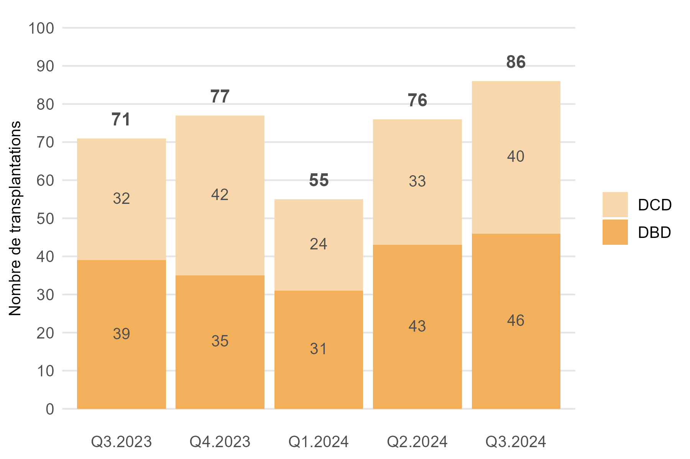
| Indicateur | Dernier trimestre | Changement par rapport au trimestre précédent |
|---|---|---|
| Nombre de transplantations de reins (tous) | 87 | +11 (+14 %) |
| DCD | 40 (46 %) | +7 |
| DBD | 47 (54 %) | +4 |
Au dernier trimestre, 87 personnes ont reçu une transplantation rénale en Suisse, provenant d’un don d’organe après le décès. Par rapport au trimestre précédent, cela représente 11 transplantations rénales de plus (+14 %).
3.8 Transplantations de pancréas et d’îlots de Langerhans
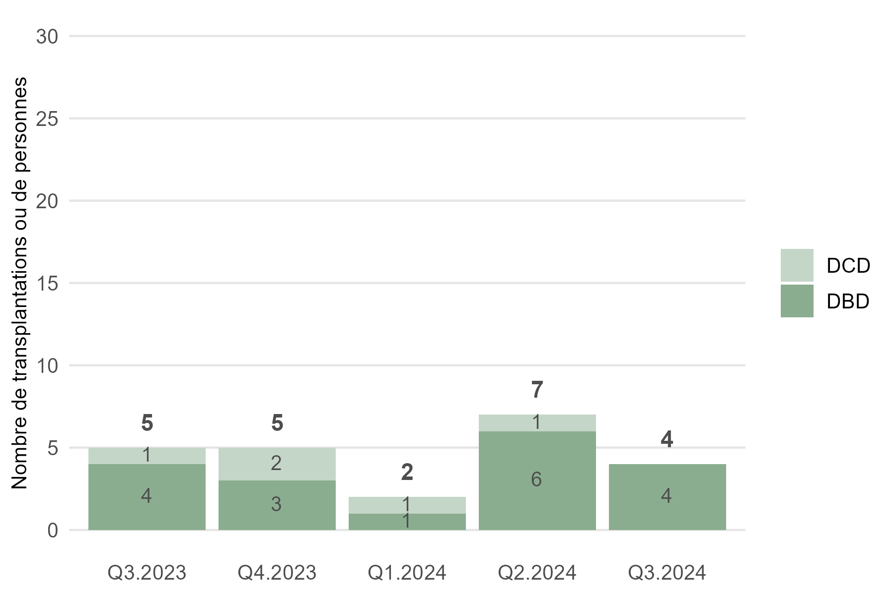
| Indicateur | Dernier trimestre | Changement par rapport au trimestre précédent |
|---|---|---|
| Nombre de transplantations de pancréas et d’îlots (tous) | 4 | -2 (-33 %) |
| DCD | 0 (0 %) | +/-0 |
| DBD | 4 (100 %) | -2 |
Au dernier trimestre, 4 personnes ont reçu une transplantation de pancréas/d’îlots en Suisse. Par rapport au trimestre précédent, cela représente 2 transplantations de moins (-33 %).